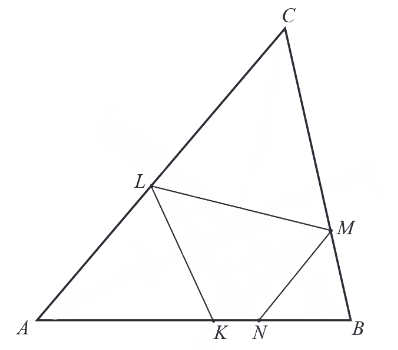

Matura 2018 maj PR
Dane są liczby \(a=\frac{\sqrt[4]{8}}{2}\), \(b=\frac{1}{2\sqrt[4]{8}}\),
\(c=\sqrt[4]{8}\), \(d=\frac{2}{\sqrt[4]{8}}\) oraz \(k=2^{-\frac{1}{4}}\). Prawdziwa jest równość
A.\( k=a \)
B.\( k=b \)
C.\( k=c \)
D.\( k=d \)
A
Równanie \( \Bigl ||x|-2 \Bigl |=|x|+2\)
A.nie ma rozwiązań
B.ma dokładnie jedno rozwiązanie
C.ma dokładnie dwa rozwiązania
D.ma dokładnie cztery rozwiązania
B
Wartość wyrażenia \(2\log_5 10 - \frac{1}{\log_{20} 5}\) jest równa
A.\( -1 \)
B.\( 0 \)
C.\( 1 \)
D.\( 2 \)
C
Granica \(\lim_{x \to 3^-} \frac{-x + 2}{x^2 - 5x + 6}\) jest równa
A.\( -\infty \)
B.\( -1 \)
C.\( 0 \)
D.\( +\infty \)
D
Punkt \(A = (−5,3)\) jest środkiem symetrii wykresu funkcji homograficznej
określonej wzorem \(f(x) = \frac{ax + 7}{x + d}\), gdy \(x \ne -d\). Oblicz iloraz \(\frac{d}{a}\).
W poniższe kratki wpisz kolejno cyfrę jedności i pierwsze dwie cyfry po przecinku nieskończonego
rozwinięcia dziesiętnego otrzymanego wyniku.
166
Styczna do paraboli o równaniu \(y = \sqrt{3}x^2 - 1\) w punkcie \(P = (x_0, y_0)\)
jest nachylona do osi \(Ox\) pod kątem \(30^\circ\). Oblicz współrzędne punktu \(P\).
\(\biggl(\frac{1}{6}, \frac{\sqrt{3} - 36}{36}\biggl)\)
Trójkąt \(ABC\) jest ostrokątny oraz \(|AC| \gt | BC|\). Dwusieczna \(d_C\) kąta
\(ACB\) przecina bok \(AB\) w punkcie \(K\). Punkt \(L\) jest obrazem punktu \(K\) w symetrii
osiowej względem dwusiecznej \(d_A\) kąta \(BAC\), punkt \(M\) jest obrazem punktu \(L\) w symetrii
osiowej względem dwusiecznej \(d_C\) kąta \(ACB\), a punkt \(N\) jest obrazem punktu \(M\) w
symetrii osiowej względem dwusiecznej \(d_B\) kąta \(ABC\) (zobacz rysunek).  Udowodnij, że na czworokącie
\(KNML\) można opisać okrąg.
Udowodnij, że dla każdej liczby całkowitej \(k\) i dla każdej liczby całkowitej
\(m\) liczba \(k^3m − km^3\) jest podzielna przez \(6\).
Z liczb ośmioelementowego zbioru \(Z = \{1, 2, 3, 4, 5, 6, 7, 9\}\) tworzymy
ośmiowyrazowy ciąg, którego wyrazy się nie powtarzają. Oblicz prawdopodobieństwo zdarzenia
polegającego na tym, że żadne dwie liczby parzyste nie są sąsiednimi wyrazami utworzonego ciągu.
Wynik przedstaw w postaci ułamka zwykłego nieskracalnego.
\(P(A) = \frac{5}{14}\)
Objętość stożka ściętego (przedstawionego na rysunku) można obliczyć ze wzoru \(V =
\frac{1}{3} \pi H (r^2 + rR + R^2)\), gdzie \(r\) i \(R\) są promieniami podstaw (\(r \lt R\)), a
\(H\) jest wysokością bryły. Dany jest stożek ścięty, którego wysokość jest równa \(10\), objętość
\(840\pi\), a \(r = 6\). Oblicz cosinus kąta nachylenia przekątnej przekroju osiowego tej bryły do
jednej z jej podstaw. 
\(\cos \alpha = \frac{9\sqrt{106}}{106}\)
Rozwiąż równanie \(\sin6x + \cos3x = 2\sin3x + 1\) w przedziale \(\langle 0, \pi
\rangle\).
\(x = 0, x = \frac{2}{3}\pi , x = \frac{7}{18}\pi, x =
\frac{11}{18}\pi.\)
Wyznacz wszystkie wartości parametru \(m\), dla których równanie \(x^2 + (m + 1)x −
m^2 + 1 = 0\) ma dwa rozwiązania rzeczywiste \(x_1\) i \(x_2\) (\(x_1 \ne x_2\)), spełniające
warunek \(x_1^3 + x_2^3 \gt -7x_1x_2\).
\(m \in (-\infty, -3) \cup \biggl(\frac{3}{5}, \frac{3}{4}\biggl)\)
Wyrazy ciągu geometrycznego (\(a_n\)), określonego dla \(n \ge 1\), spełniają układ
równań \[\begin{cases} a_3 + a_6 = -84 \\ a_4 + a_7 = 168 \end{cases} \] Wyznacz liczbę \(n\)
początkowych wyrazów tego ciągu, których suma \(S_n\) jest równa \(32769\).
\(n = 15\)
Punkt \(A = (7, −1)\) jest wierzchołkiem trójkąta równoramiennego \(ABC\), w którym
\(|AC| = |BC|\). Obie współrzędne wierzchołka \(C\) są liczbami ujemnymi. Okrąg wpisany w trójkąt
\(ABC\) ma równanie \(x^2 + y^2 = 10\). Oblicz współrzędne wierzchołków \(B\) i \(C\) tego trójkąta.
\(B = \biggl(\frac{-17}{5}, \frac{31}{5}\biggl), C = \biggl(-3,
\frac{-13}{3}\biggl)\)
Rozpatrujemy wszystkie trapezy równoramienne, w które można wpisać okrąg,
spełniające warunek: suma długości dłuższej podstawy \(a\) i wysokości trapezu jest równa \(2\).
Wyznacz wszystkie wartości \(a\), dla których istnieje trapez o podanych własnościach.
Wykaż, że obwód \(L\) takiego trapezu, jako funkcja długości \(a\) dłuższej podstawy
trapezu, wyraża się wzorem \(L(a) = \frac{4a^2 - 8a + 8}{a}\).
Oblicz tangens kąta ostrego tego spośród rozpatrywanych trapezów, którego obwód jest
najmniejszy.
a) \(a \in (1, 2)\)
c) \(\operatorname{tg} \alpha = 1\)